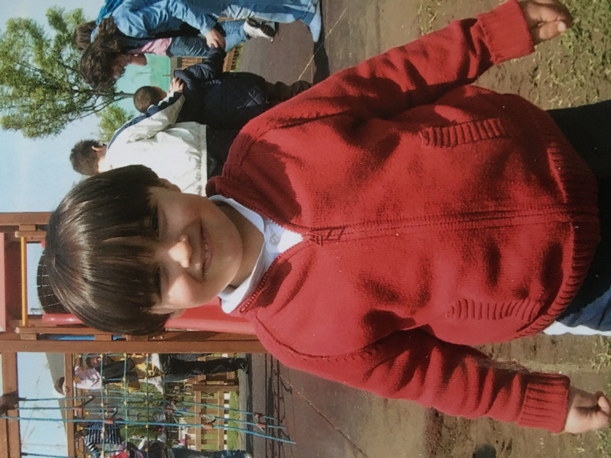
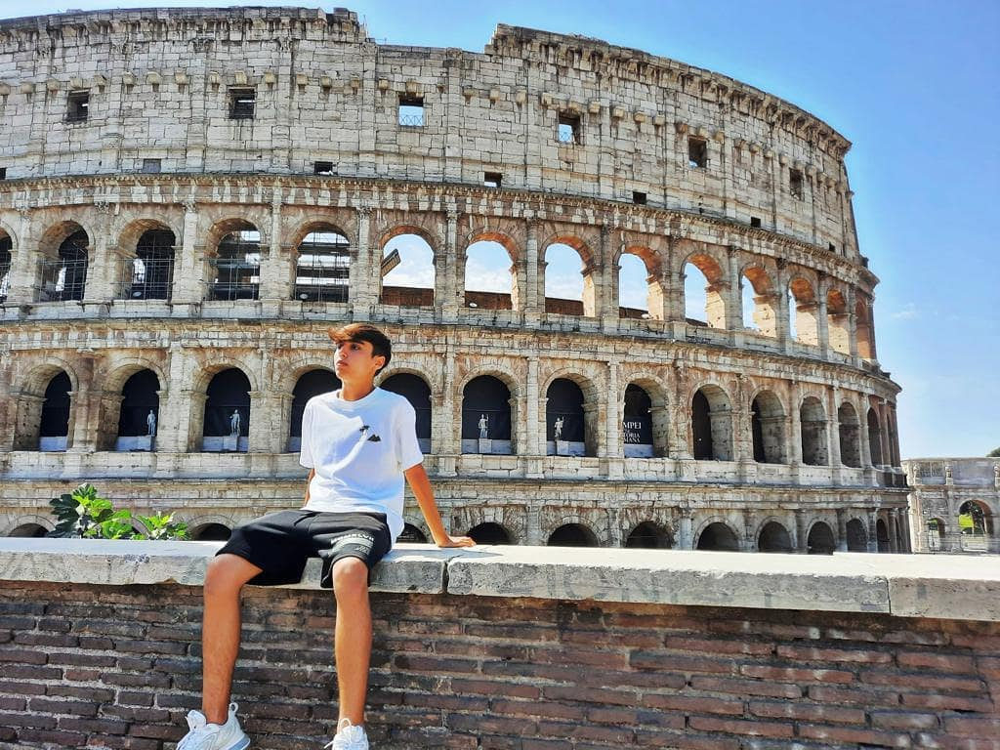

I am Riccardo, Riccardo Bruno

Chilhood
Sono nato il 16 gennaio 2006 a Capua, una piccola città vicino Caserta. Sin da piccolo la mia unica costante è stata lo sport, in particolare il calcio.

Adulthood
All'età di 16 anni mi sono cominciato ad appassionare al mondo dell'informatica, in primo luogo al graphic design e dopodiché al web development.
Alcuni dei miei design...


Le Mie Skills
Graphic Design
⭐⭐⭐⭐
- Sport Designs
- Photo Manipulations
- Youtube Thumbnails
Video Editing
⭐⭐⭐
- Instagram Reels
- Tik Tok
- Youtube Videos
- Web Development
⭐
Education and Awards
- Liceo Scientifico Eduardo Amaldi
- Segnalazione meritocratica in concorso "Che Storia"-
Il mio Libro
- Mobilitazione Erasmus in Germania con relativi attestati
Past Works
- Fattorino
- Cameriere per Eventi